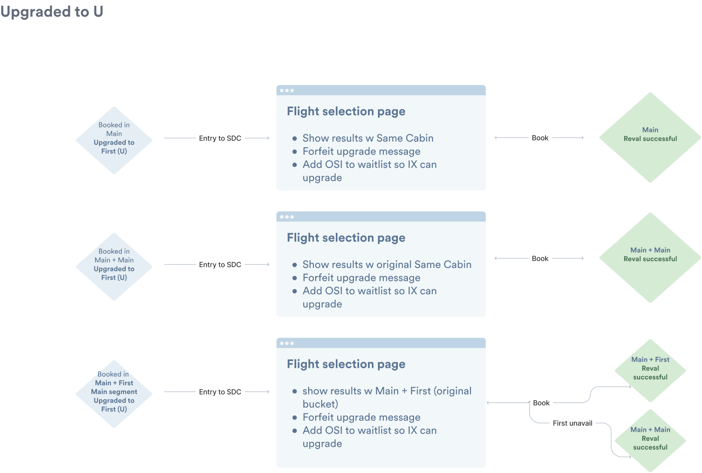
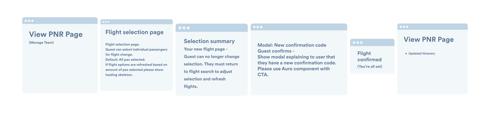
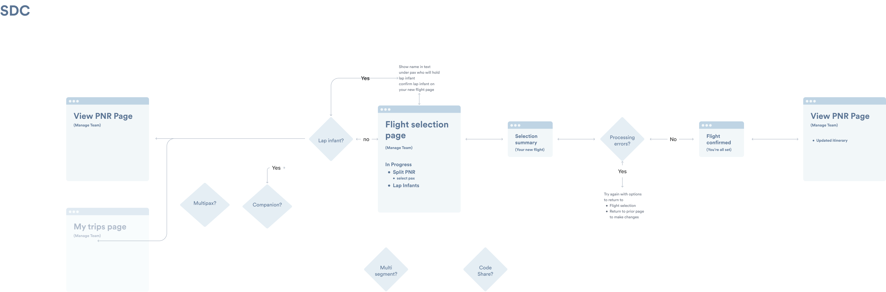

The Same Day Change experience on desktop — enabling travelers to rebook earlier or later flights before arriving at the airport.
Alaska Airlines
Translating complex business rules and DOT regulations into a scalable, net-new revenue-generating product.
About Alaska Airlines
Alaska Airlines is a Seattle-based carrier and the largest airline at Seattle-Tacoma International Airport (SEA), with approximately 2,000 daily departures. Founded in 1932, Alaska built its reputation serving the Pacific Northwest before expanding its global footprint in 2024 with the acquisition of Hawaiian Airlines — transforming from a regional carrier into a major international airline with one of the most loyal customer bases in the industry.
The Same Day Change experience on desktop — enabling travelers to rebook earlier or later flights before arriving at the airport.
Context
In 2022, Sea-Tac International Airport began a $500 million renovation. Alaska Airlines — the largest carrier in Seattle with roughly 2,000 daily departures — needed to reduce lobby congestion fast. One of the experiences contributing to crowding was Same Day Change (SDC), a service that let travelers swap to an earlier or later flight on their day of travel.
The catch? It was only available at airport kiosks, averaging just under 3 minutes per transaction. Most guests didn't even know the option existed. Those who did were understandably nervous about waiting until they reached the airport to make the change.
Imagine you and your travel partner are returning from a ski trip. They get injured and need the last flight out. You need to get home for work the next morning. At a kiosk, you could split your reservation and rebook — but only if you knew to try.
The opportunity was clear: bring SDC online so travelers could rebook from their own devices, reduce lobby traffic, and capture the fee earlier in the process.
Discovery
I kicked off the project with my research partner at Alaska's call center, listening to live customer calls about cancellations and changes. Three insights stood out immediately:
The Technical Product Owner helped me map the business constraints: SDC was only available once check-in opened, the new flight had to depart the same calendar day, children under 16 had to stay paired with an adult, guests with checked bags were excluded, and seat upsells or special assistance needed to transfer correctly.
I mapped out every flow and validated them with product and engineering before anyone wrote a line of code.

The SDC user flow — mapping every business rule, edge case, and decision point before design began.
Iteration
My first iterations explored filtering flights by "earlier" or "later" so users could quickly narrow results. I pushed to keep the UI simple — someone making a snap decision at the airport shouldn't face a learning curve. I also advocated for showing flight details and boarding status directly in the results, so travelers fully understood the implications of their new flight before committing.
Behind a deceptively simple interface sat dozens of business rules, DOT regulations, and edge cases — from party splitting logic to seat transfer validation. The design challenge was absorbing all of that complexity so the traveler never had to.

Flight selection with boarding status and time filtering.

Party splitting — handling travelers on the same reservation who need different flights.

Mobile-first design ensured travelers could rebook on the go.

Confirmation screen — clear summary before committing to the change.
Outcomes
$175K
Revenue in first 30 days
$612K
Revenue by six months
$25
Fee per change at launch
Same Day Change went from an obscure kiosk feature to a self-service product generating real revenue while reducing airport congestion — exactly what the business needed heading into Sea-Tac's renovation.